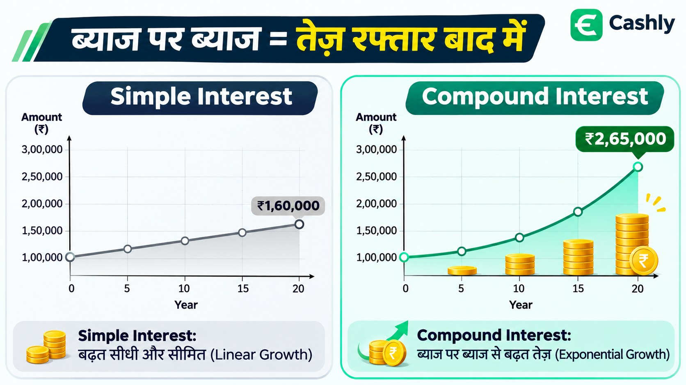
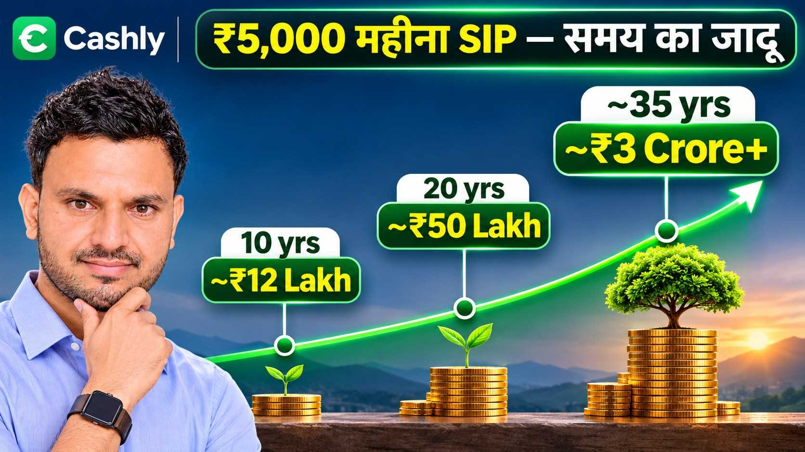
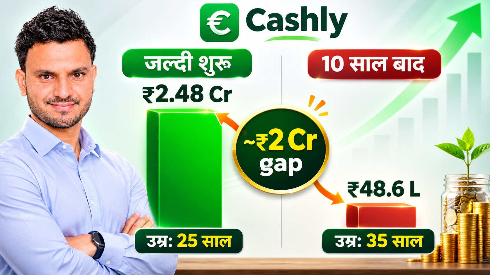

Compounding · SIP · India
₹5,000 हर महीने → ₹3 करोड़। 10 साल टालो, तो लगभग ₹2 करोड़ छूट सकते हैं।
₹5,000 a month → ₹3 crore. Wait 10 years, and you may leave ~₹2 crore on the table.
बहुत लोग “compound interest” शब्द सुन चुके हैं। कम लोग ये महसूस करते हैं कि हर महीने एक छोटी सी रकम — जैसे ₹5,000 — लंबे समय तक अनुशासन से लगती रहे, तो नतीजा सीधी लाइन में नहीं, बल्कि मुड़ती हुई curve पर बढ़ता है।
Most people have heard “compound interest”. Fewer feel what a small monthly amount — like ₹5,000 — can do when invested with discipline for decades: growth is not a straight line; the curve bends upward.
नीचे वही बात सरल numbers में है: कैसे समय आपके पैसे का दोस्त बनता है, और कैसे शुरुआत टालना सिर्फ “थोड़े साल कम” नहीं, बल्कि अक्सर बड़ा नतीजा छोड़ देना होता है।
Below is the same idea in plain numbers: how time becomes your money’s friend, and why delaying the start is not just “a few years less” — it often means leaving a much bigger outcome behind.
Compound interest असल में क्या करता है?
What compound interest actually does
Simple interest सिर्फ मूलधन पर ब्याज देती है। Compound interest में ब्याज पर भी ब्याज लगता है — यानी आपकी कमाई खुद कमाना शुरू कर देती है।
Simple interest pays only on the principal. Compound interest pays interest on interest — your earnings start earning too.
शुरुआती सालों में curve धीमी लगती है। बीच के सालों में रफ्तार दिखती है। आखिरी सालों में वही SIP अक्सर सबसे तेज़ नतीजा देती है — क्योंकि base पहले ही बड़ा हो चुका होता है।
Early years feel slow. Middle years show pace. Later years often deliver the fastest gains — because the base is already large.

Rule of 72 — डबल होने का त्वरित हिसाब
Rule of 72 — a quick doubling shortcut
रिटर्न दर से पैसा लगभग कब दोगुना होगा:
Roughly when money doubles at a given return:
यही वजह है कि लंबे horizon पर छोटी मासिक रकम भी बड़ा corpus बना सकती है।
That is why a small monthly SIP can still build a large corpus over a long horizon.
₹5,000 महीना — समय के साथ क्या हो सकता है?
₹5,000 a month — what time can do
मान लीजिए हर महीने ₹5,000, और लंबे समय का औसत रिटर्न roughly 12% सालाना (शिक्षा के लिए उदाहरण — गारंटी नहीं):
Assume ₹5,000 every month and a long-run average return of about 12% a year (educational example only — not guaranteed):

10 साल बाद शुरू करना = अक्सर बड़ा नुकसान
Starting 10 years later often costs a lot
दो लोग, एक जैसी मासिक रकम:
Two people, same monthly amount:
- व्यक्ति A — जल्दी शुरू करता है, अनुशासन से लगाता रहता है।
- Person A starts early and stays consistent.
- व्यक्ति B — 10 साल टालता है, फिर वही ₹5,000 शुरू करता है।
- Person B waits 10 years, then starts the same ₹5,000.
B ने सिर्फ “10 साल कम invest” नहीं किया — उसने वो साल खोए जब पैसा शांत बैठकर बढ़ सकता था। कई उदाहरणों में अंतर करीब ₹2 करोड़ जितना outcome छोड़ सकता है।
B did not only “invest 10 years less” — they lost the years when money could grow quietly. In many illustrations the outcome gap is around ₹2 crore.

आज से क्या करें
What to do from today
- रकम तय करो जो टूटे नहीं — ₹2,000 भी चले, हर महीने।
- Pick an amount you can sustain — even ₹2,000 monthly counts.
- सैलरी के तुरंत बाद SIP date।
- Set the SIP date right after salary credit.
- खर्च का हिसाब रखो — Cashly app इसी के लिए है।
- Track spending so the SIP is not skipped — that is what Cashly is for.
- अपने नंबर calculator पर चलाओ।
- Run your own numbers on the calculators.
पूरी कहानी वीडियो में
Full story on video
शिक्षा के लिए। रिटर्न गारंटी नहीं। व्यक्तिगत सलाह के लिए registered adviser से बात करें।
For education only. Returns are not guaranteed. Speak to a registered adviser for personal advice.